Qué es el módulo
Informes Institucionales es donde cada unidad de la universidad escribe su informe de gestión del año, y donde Planeación lo recibe, lo revisa y lo convierte en un documento.
Papeles y estados
Quién puede hacer qué en cada informe, cómo se obtiene cada papel y por qué estados pasa un informe.
Administrador · preparar el ciclo
Cómo Planeación abre el año, decide qué secciones lleva cada informe y fija lo que las unidades deben justificar.
Administrador · seguir y revisar
Asignar responsables, abrir informes, vigilar el avance, devolver con nota y capacitar a Pilo.
Gestor · escribir y enviar
El recorrido completo del jefe de unidad: leer la pantalla, diligenciar cada sección, resolver los controles y enviar.
Contribuyente y Consulta
Qué hace quien ayuda a diligenciar el informe sin enviarlo, y qué ve quien solo consulta.
Cómo se articula el formato
Cómo se conectan las plantillas, las secciones, las cifras vivas y los archivos que salen del informe.
El libro de Excel
Cómo descargar el informe en Excel, repartirlo entre equipos, diligenciarlo y devolverlo al sistema sin perder nada.
Vista, PDF y presentación
Cómo se ve el informe en papel, cómo se personaliza su portada y su cierre, cómo se descarga en PDF y cómo se convierte en una presentación.
Problemas frecuentes
Mensajes que confunden, límites que conviene conocer y a quién acudir.
Cada año, las decanaturas, las vicerrectorías, las rectorías de campus y la Rectoría General entregan un informe de gestión. Este módulo reemplaza los documentos sueltos: el informe se arma en la pantalla, con las cifras del portal ya cargadas, y sale en Excel y en PDF.
Vive en la intranet, en planeacion.udes.edu.co/admin/informes-gestion. Para entrar se necesita un papel en la unidad: Planeación asigna quién escribe el informe de cada una. Si usted no ve el módulo, pida a Planeación que lo habilite.

Cómo se arma un informe
Todo sigue el mismo recorrido, de izquierda a derecha. Cada capítulo del manual explica uno o varios pasos y dice quién los hace.
Dos ideas sostienen todo lo demás. Primero, las cifras con fuente automática se leen en vivo mientras el informe se escribe y se congelan al enviar: lo que usted aprueba es lo que queda. Segundo, nadie escribe las cifras dentro del texto: las cita con un vínculo, y así el texto sigue a la fuente.
Para quién es cada capítulo
| Papel | Qué hace | Capítulos |
|---|---|---|
| Administrador | Es Planeación: abre el ciclo, define la estructura, asigna responsables, revisa y capacita a Pilo. | 2, 3, 6, 7, 8 |
| Gestor | Es la jefatura de la unidad: diligencia el informe y lo envía. | 4, 6, 7, 8 |
| Contribuyente | Es quien ayuda a diligenciar: escribe, pero no envía. | 5, 6, 7, 8 |
| Consulta | Solo lee el informe de la unidad. | 5 |
En la pantalla, al Administrador se le llama «Planeación». En este manual se usa «Administrador» para distinguir a la persona del área.
Glosario
| Término | Qué significa |
|---|---|
| Ciclo | El año del informe. Tiene fecha límite, corte de las cifras y un estado: en preparación, abierto o cerrado. |
| Plantilla | La lista de secciones de un informe. Hay cuatro: A (Decanatura), B (Vicerrectoría u oficina), C (Rectoría de campus) y D (Rectoría General). |
| Estructura propia | Una plantilla que Planeación crea para oficinas específicas. Se llama X1, X2… |
| Sección | Cada parte del informe: resumen, alineación con el PDI, metas, resultados, logros, evidencias… |
| Cifra viva | Una cifra con fuente automática. Se lee en vivo mientras el informe es borrador. |
| Foto | El valor de una cifra guardado al enviar. Desde ahí no cambia. |
| Token | El vínculo a una cifra dentro de un texto, escrito como [[matric]]. Se resuelve al valor vivo o a la foto. |
| Evidencia | Un archivo o enlace que respalda el informe. Es obligatoria: sin al menos una no se puede enviar. |
| Unidad destino | La unidad a la que se entrega el informe. Puede devolverlo, pero no aprobarlo. |
| Libro de Excel | El informe completo, o la parte de un equipo, en un archivo .xlsx para diligenciar fuera del portal. |
Cómo leer el manual. Lo que va entre comillas angulares, como «Enviar», es el texto exacto del botón o del campo. Los círculos amarillos de las capturas se explican en la lista que les sigue. Los estados llevan siempre símbolo y palabra: Aprobado Borrador Devuelto. Las capturas usan datos ficticios.
Cada persona tiene un papel por unidad. El papel decide qué botones ve y qué puede guardar. La base de datos vuelve a comprobarlo, de modo que una pantalla abierta de más no abre permisos.
Los cuatro papeles
| Papel | Diligencia | Envía | Ve las demás unidades | Cambia la estructura |
|---|---|---|---|---|
| Administrador (Planeación) | Solo lee, salvo en su propia unidad | Sí si es de la unidad | Sí, en lectura | Sí |
| Gestor (jefe de unidad) | Sí | Sí | No | No |
| Contribuyente (editor) | Sí | No | No | No |
| Consulta (visor) | No | No | No | No |
Hay una diferencia más entre Gestor y Contribuyente: el color de acento, el monograma, el escudo, el contacto y la línea del pie de la oficina solo los cambia el Gestor. El Contribuyente puede cambiar la composición de la portada, los textos, la imagen, las firmas y los créditos.
Cómo se obtiene un papel
Planeación asigna a la persona como Gestor, Contribuyente o Consulta desde «Responsables» en el Tablero. Es la forma habitual y se ve en la fila de la unidad.
En Usuarios y roles, el módulo «Informes de gestión» en «Ver» permite elegir «Quién hace el informe»: «Solo el de su unidad», «Diligencia» o «Diligencia y envía». Se elige el alcance: toda la estructura o unidades concretas.
Los estados de un informe
Un informe pasa por cuatro estados. Cada uno lleva símbolo y palabra, nunca solo color.
| Estado | Qué significa | Quién puede editar |
|---|---|---|
| Borrador | Se está escribiendo. Las cifras se leen en vivo. | Gestor y Contribuyente |
| Enviado | Solo se ve en informes anteriores a la regla actual: hoy el envío aprueba en el mismo paso. | Nadie |
| Aprobado | El Gestor lo envió. Las cifras quedaron congeladas con su foto. | Nadie |
| Devuelto | Planeación o la unidad destino lo devolvieron con una nota. Las cifras vuelven a ser vivas. | Gestor y Contribuyente |

Qué ve cada papel en cada estado
| Estado | Gestor | Contribuyente | Consulta |
|---|---|---|---|
| Sin abrir | «Planeación todavía no abre el informe de su unidad» | Lo mismo | Lo mismo |
| Borrador | Edita y envía cuando todo está listo | Edita; «Enviar» deshabilitado | Lee |
| Devuelto | Ve la nota, edita y reenvía | Ve la nota y edita | Lee y ve la nota |
| Aprobado | Lee; botón «Enviado» deshabilitado | Lee | Lee |
Para que una unidad pueda abrir, guardar o enviar, el ciclo debe estar «Abierto». Con el ciclo en preparación o cerrado, la base rechaza el guardado y la pantalla muestra un mensaje que habla de «enviado», aunque la causa sea el estado del ciclo. Si le pasa, pida a Planeación que revise el ciclo.
Antes de que alguien escriba, Planeación deja el ciclo listo: fechas, estructura, requisitos y criterios. Todo esto vive en el Tablero del ciclo y en la pestaña Estructuras. Mientras el ciclo está en preparación se puede cambiar casi todo; abierto, solo se ajusta.
Crear y abrir el ciclo
Entre por «Tablero del ciclo». Si no hay ciclo, la pantalla dice «Abrir el ciclo del informe de gestión». Hay un ciclo por año.
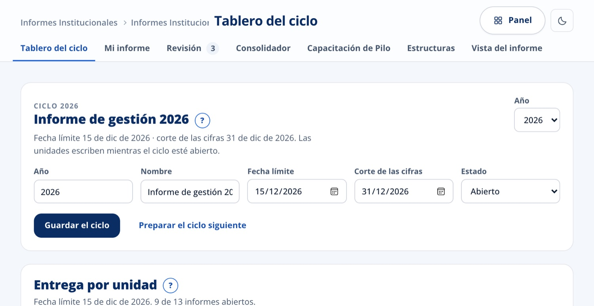
12345El año no se cambia después de crear el ciclo. El nombre sale por defecto como «Informe de gestión» más el año. Si hay más de un ciclo, este selector cambia de año.
Es la fecha de entrega y se muestra a todas las unidades. Al lado está el corte de las cifras, la fecha de referencia de las cifras automáticas.
«En preparación», «Abierto» o «Cerrado». Solo con el ciclo abierto las unidades pueden abrir su informe, guardar y enviar.
La primera vez el botón dice «Crear el ciclo». Después, «Guardar el ciclo».
Crea el año siguiente en preparación y copia la estructura y los datos requeridos del actual.

La estructura de cada informe
En la tarjeta «La estructura de cada informe» se elige una plantilla y se ajusta para este ciclo. Cada plantilla trae sus secciones; Planeación puede desactivar las que no apliquen, cambiar títulos, reordenar y agregar secciones libres.
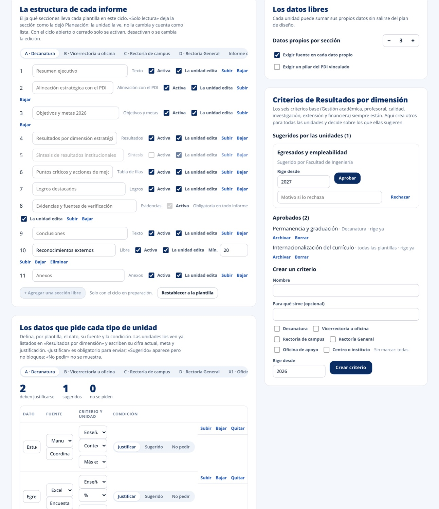
| Control | Qué hace |
|---|---|
| Título | Cambia el nombre de la sección. Solo en preparación; hasta 120 caracteres. |
| Activa | Una sección inactiva no aparece, no cuenta en «N de M listas» y no bloquea el envío. No se puede desactivar la última sección activa. |
| La unidad edita | Si se desmarca, la sección queda «Solo lectura»: la unidad la ve, no la cambia y cuenta como lista. |
| Mín. | Palabras mínimas de una sección libre, de 0 a 2.000. |
| Subir, Bajar, Eliminar | Reordenan. Solo se elimina una sección libre y solo en preparación. |
| «+ Agregar una sección libre» | Crea una sección propia del ciclo, con texto, tablas de Excel y gráficas de UDrive. |
| «Restablecer a la plantilla» | En preparación borra los ajustes y lo escrito en secciones libres. Con el ciclo abierto o cerrado solo reactiva lo desactivado. |
Qué debe justificar cada unidad
Hay dos mecanismos distintos y conviene no confundirlos. El primero decide, por cada una de las 14 cifras automáticas, cuánto exige Planeación. El segundo agrega datos que Planeación quiere que cada tipo de unidad reporte en Resultados.
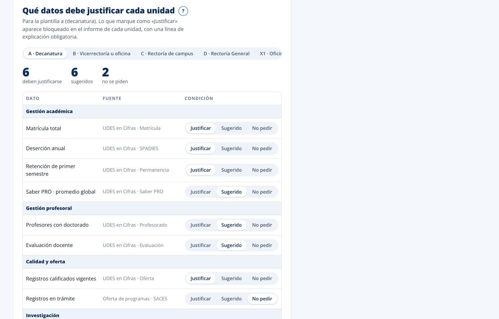
| Condición | Qué ve la unidad | Bloquea el envío |
|---|---|---|
| Justificar | La cifra aparece bloqueada con candado y «Lo pide Planeación». Hay que escribir una línea que explique el resultado. | Sí |
| Sugerido | La cifra aparece con la casilla «Incluir». | No |
| No pedir | La cifra no se muestra. | No |
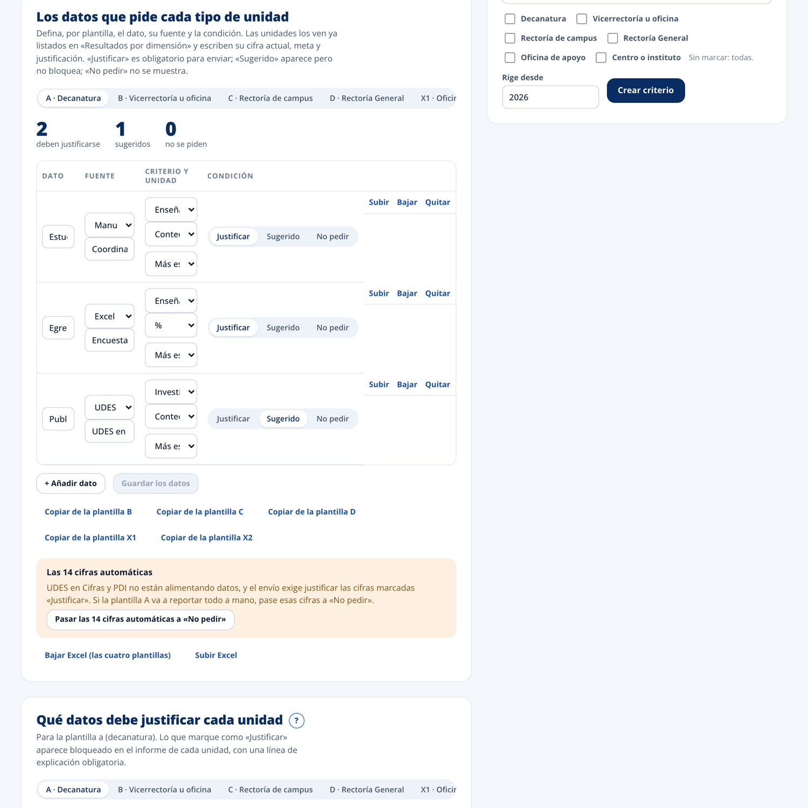
A, B, C o D. Estos datos solo funcionan con las plantillas A a D, no con las estructuras propias.
«+ Añadir dato»: nombre de 3 a 120 caracteres, fuente (Manual, Excel, UDES en Cifras o PDI) y dónde se consigue, criterio, unidad y si más o menos es mejor, y la condición.
«Guardar los datos». Si algo falta, el aviso lo dice: «Cada dato necesita un nombre de 3 a 120 caracteres.»
Para cargar muchos datos de una vez, «Bajar Excel (las cuatro plantillas)» entrega datos-requeridos.xlsx y «Subir Excel» lo devuelve. También puede copiar los datos de otra plantilla con «Copiar de la plantilla…». En la unidad, cada dato aparece en el bloque «Lo que pide Planeación», con «Fuente propia de la unidad» y una justificación obligatoria de al menos 10 caracteres.
Los datos libres y los criterios
La tarjeta «Los datos libres» fija cuántos datos propios puede agregar cada unidad por sección (de 0 a 10; por defecto 3) y si se exige fuente en cada uno (sí por defecto) y un pilar del PDI vinculado (no por defecto).
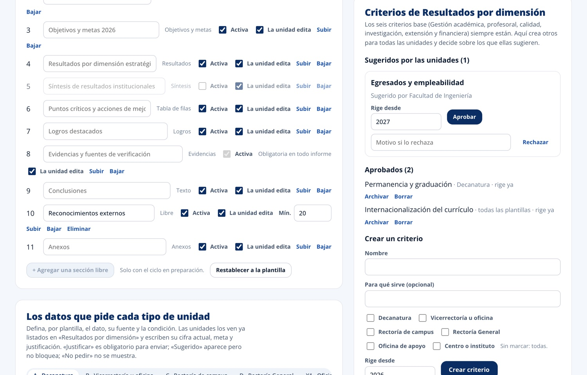
Los criterios son los grupos en que las unidades reportan sus resultados. Los criterios base siempre están: Extensión, Internacionalización, Investigación, Enseñanza, Gestión administrativa y financiera y Acciones estratégicas. Aquí Planeación crea otros para todas las unidades y decide sobre los que las unidades sugieren.
- «Sugeridos por las unidades»: cada uno con «Rige desde» (el año del ciclo más uno por defecto), «Aprobar» y «Rechazar» con un motivo.
- «Aprobados»: se pueden «Archivar» o «Borrar». Los indicadores ya escritos conservan el nombre del criterio.
- «Crear un criterio»: nombre de 3 a 80 caracteres, para qué sirve y a qué plantillas aplica. Sin marcar, aplica a todas.
Plantillas propias
Las plantillas A a D no se editan. Si una oficina necesita otra distribución, Planeación crea una estructura propia en la pestaña «Estructuras», partiendo en blanco o de una plantilla existente. Se llaman X1, X2… y el resto del módulo las trata igual que las demás.
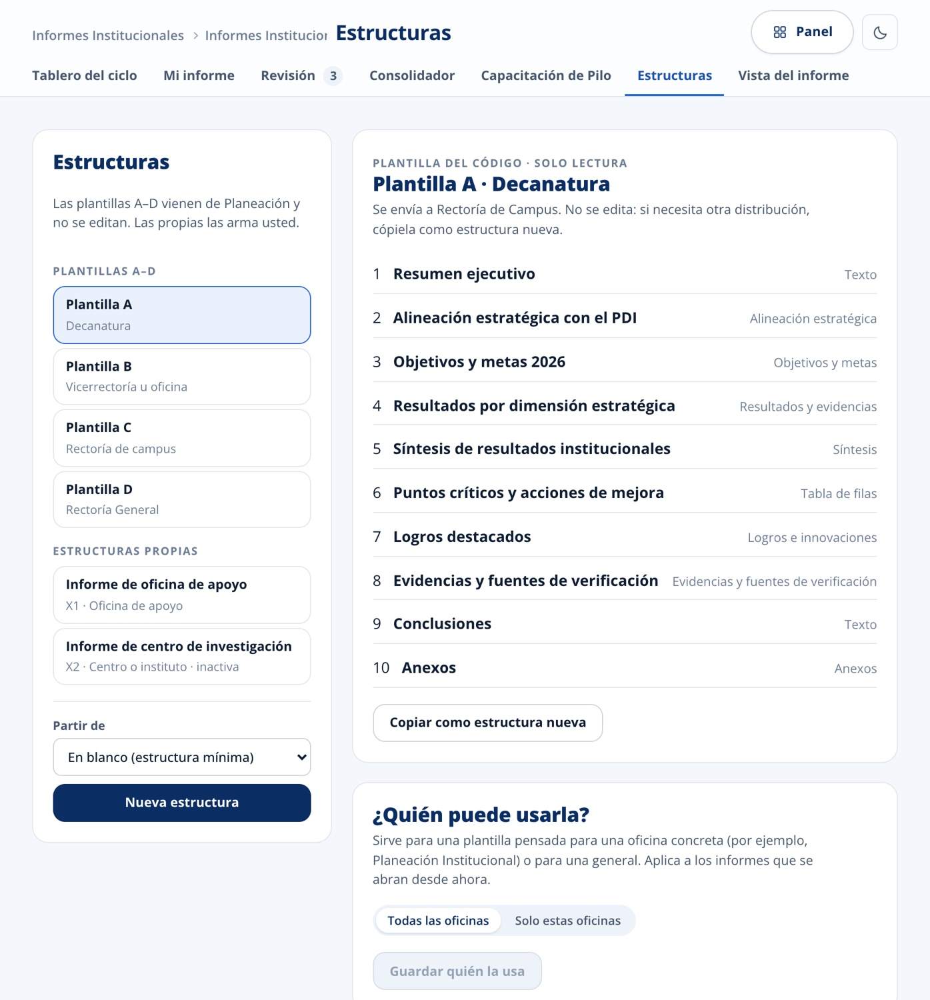
«Nombre» (hasta 80 caracteres), «Quién la diligencia» y «A quién se envía». Son obligatorios.
De 2 a 30. Cada una con título, tipo y, según el tipo, extensión esperada, mínimo de palabras, dimensiones o columnas. «Evidencias y fuentes de verificación» es obligatoria y los anexos van siempre al final.
«Todas las oficinas» o «Solo estas oficinas». Se guarda con «Guardar quién la usa» y vale para los informes que se abran desde ese momento.
«Crear la estructura». Con informes ya abiertos no se cambian sus secciones ni se elimina; solo se ajusta el nombre, el destino, la descripción y si está activa. Para otra distribución use «Duplicar».
Sí. Desmarque «Activa: se ofrece al abrir informes». Los informes ya abiertos siguen, y no se le ofrecerá a ninguna unidad más.
Con el ciclo abierto, el trabajo de Planeación cambia: asigna a quien escribe, abre los informes que faltan, mira el avance de cada unidad y revisa lo que llega. Casi todo ocurre en el Tablero y en Revisión.
El tablero de entrega
La tarjeta «Entrega por unidad» muestra todas las unidades que escriben informe. Los programas no escriben informe propio: no salen en la lista.
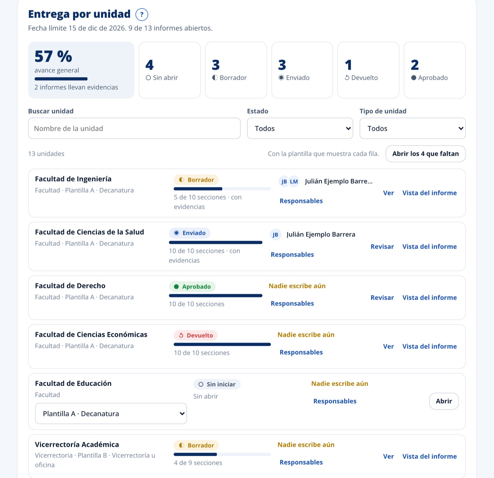
12345El cuadro grande resume el avance: las secciones listas entre las del total, y cuántos informes llevan evidencias. A su lado, el conteo por estado: «Sin abrir», «Borrador», «Enviado», «Devuelto» y «Aprobado». Cada cuadro filtra la lista al pulsarlo.
Junto a «Estado» y «Tipo de unidad» filtra la lista. «Quitar los filtros» los limpia. La lista muestra 60 y «Mostrar N más» sigue.
Abre en serie todos los informes pendientes con la plantilla que muestra cada fila y se detiene en el primer error, que muestra con el nombre de la unidad.
Abre el cajón con las personas de la unidad y su papel. Cada fila también trae la unidad, su plantilla, el estado y la barra «N de M secciones».
En una unidad con informe enviado o aprobado lleva a Revisión. En un borrador dice «Ver». En una unidad sin informe hay un selector de plantilla y «Abrir».
Una unidad no puede abrir con una plantilla que Planeación no le habilitó. «Vista del informe», en cada fila, abre el informe como saldrá en papel.
Quién escribe el informe
En cada fila, «Responsables» abre un cajón con las personas de la unidad y su papel. Los papeles son los de la unidad: cambiarlos aquí los cambia en toda la plataforma, y por eso el cajón lo dice.
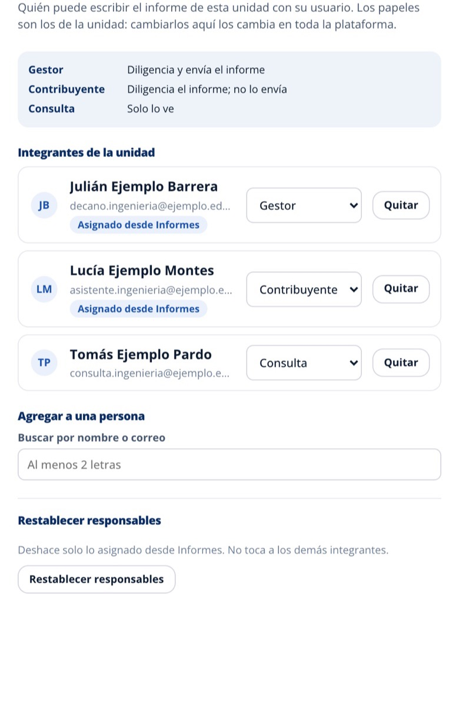
1234| Papel | Qué puede hacer |
|---|---|
| Gestor | Diligencia y envía el informe. |
| Contribuyente | Diligencia el informe; no lo envía. |
| Consulta | Solo lo ve. |
Cada integrante tiene su selector de papel: Gestor, Contribuyente o Consulta. Cambiarlo cambia el papel en toda la plataforma.
Deshace la asignación y devuelve a la persona a su papel anterior, o la saca de la unidad si no era integrante.
Escriba al menos 2 letras del nombre o del correo, elija el papel (por defecto, Contribuyente) y pulse «Asignar». Si ya es integrante, el botón dice «Cambiar papel».
Deshace solo lo asignado desde Informes y no toca a los demás integrantes.
Cada asignación deja un registro con el papel anterior de la persona, y por eso se puede deshacer.
Revisar lo que llega
La pestaña «Revisión» lista los informes enviados, devueltos o todos. El contador indica cuántos están en estado «Enviado». Como enviar ya aprueba, la cola sirve sobre todo para leer y devolver.
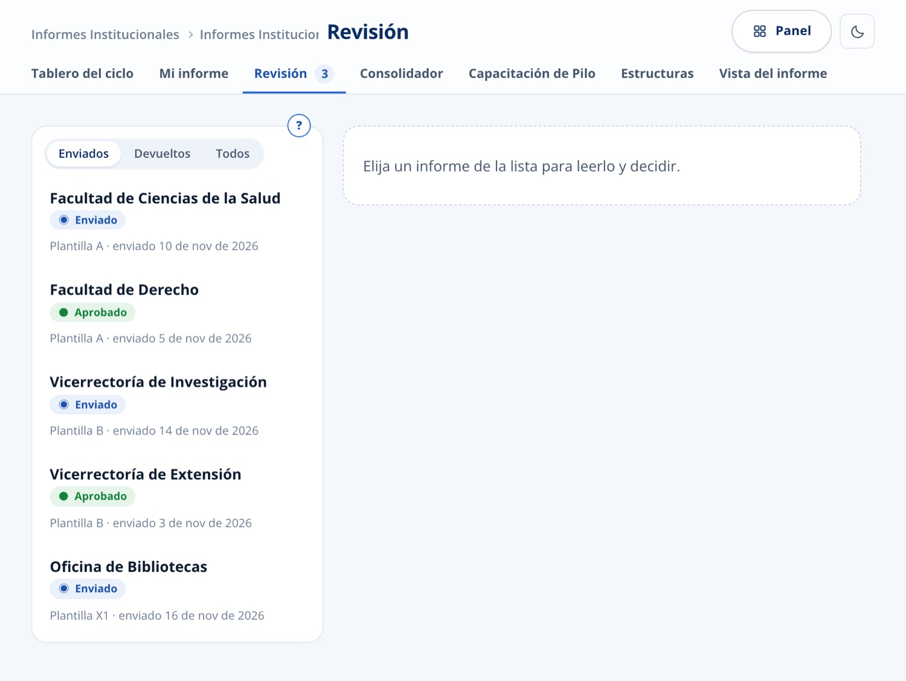
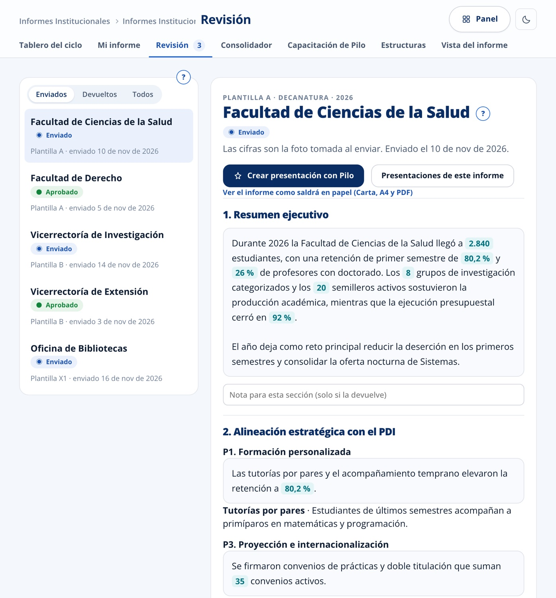
Cada sección se muestra numerada, con las cifras como foto del envío. Hay enlaces para ver el informe en papel y para crear una presentación con Pilo. Cada sección tiene el campo «Nota para esta sección (solo si la devuelve)».
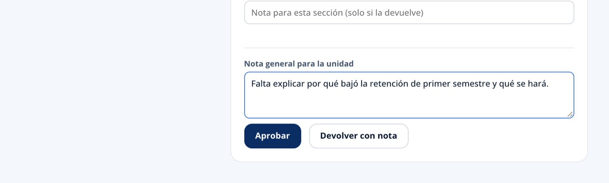
123Escriba qué debe corregir la unidad. Se suma a las notas de cada sección.
Solo aparece en informes que quedaron en estado «Enviado» antes de que el envío aprobara de una vez.
O «Reabrir y devolver con nota» si está aprobado. El botón queda deshabilitado hasta que haya al menos una nota: «Para devolver, escriba al menos una nota.»
Al devolver, el informe pasa a «Devuelto», las cifras vuelven a ser vivas y la unidad ve la nota general y la de cada sección.
Ver el informe de cualquier unidad
En «Mi informe», quien gestiona ve el selector «Ver el informe de». El informe se abre en solo lectura, con el aviso «Administración: solo lectura». Planeación no escribe el informe de otra unidad desde aquí: escribe quien trabaja en ella.
Capacitar a Pilo
Pilo redacta borradores con el estilo de la universidad porque aprende de informes ya escritos. En «Capacitación de Pilo», Planeación sube informes en Word o PDF con texto; un PDF escaneado no se puede leer.
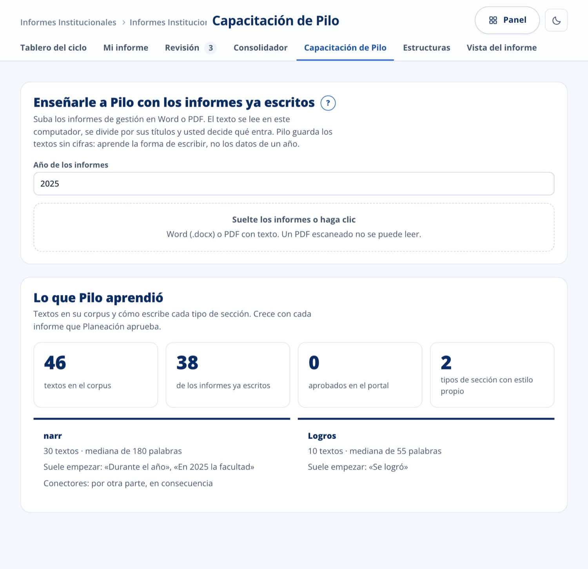
Elija el año de los informes y suelte los archivos. Solo se aceptan .docx y .pdf.
El sistema divide el texto por sus títulos, adivina la unidad y la plantilla, y muestra «N de M secciones entran». Descarta índices, títulos sin texto y secciones de menos de 25 palabras.
«Enviar a Pilo». Pilo guarda los textos sin cifras: aprende la forma de escribir, no los datos de un año.
Desde ese momento, cada informe que se envía también le enseña a Pilo. Solo cuenta lo aprobado, y nunca las cifras. Si Pilo no logra aprender de un informe, el informe queda enviado y aprobado igual, y la pantalla lo avisa.
Es una pantalla anunciada para la próxima fase. Hoy no hace nada. Las rectorías y la Rectoría General arman su informe con sus propias secciones.
Como Gestor usted diligencia el informe de su unidad y es la persona que lo envía. Puede apoyarse en su equipo: el Contribuyente escribe con usted, y el libro de Excel sirve para recoger información de otras oficinas.
Entrar y leer la pantalla
Abra «Informes de gestión» desde el menú o la tarjeta «Mi informe» del lanzador. Como no gestiona el ciclo, entra directo a Mi informe. Si Planeación aún no abrió el informe de su unidad, la pantalla lo dice y no hay nada que hacer.
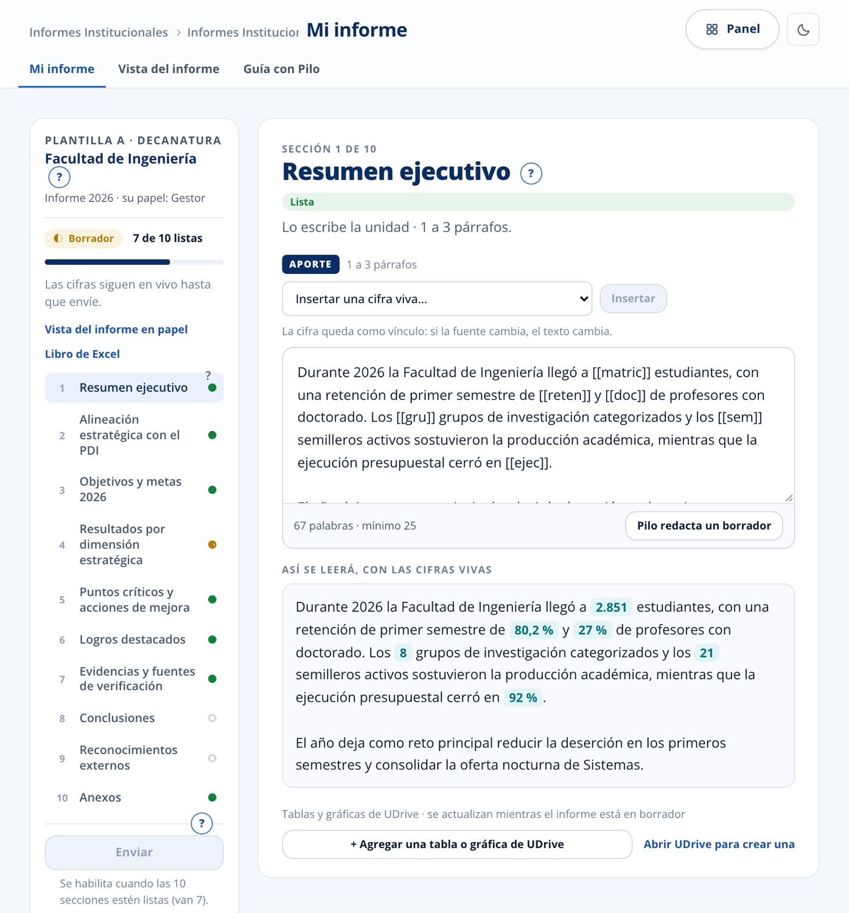
1234«N de M listas» y la barra dicen cuántas secciones están terminadas. Arriba están la plantilla, la unidad, su papel y el estado.
Junto a «Vista del informe en papel», abre el cajón para descargar el informe en Excel o importarlo (capítulo 7).
Cada sección tiene su número, su título y un punto: «Sin empezar», «En curso» o «Lista». Al centro está la sección abierta, con su título, su línea de ayuda y su avance. A la derecha, «Controles» dice qué falta: un «!» ámbar es algo por corregir y un «✓» es algo bien.
Está al pie del riel. Mientras haya algo pendiente, está deshabilitado y debajo dice qué falta.
El guardado es automático, 800 milisegundos después de escribir. La leyenda dice «Guardando…», «Cambios guardados» o «No se guardó:» con el motivo. Al salir de la pantalla se guarda lo pendiente. Si es su primera vez, el banner «¿Primera vez aquí?» ofrece la guía de Pilo con «Empezar la guía».
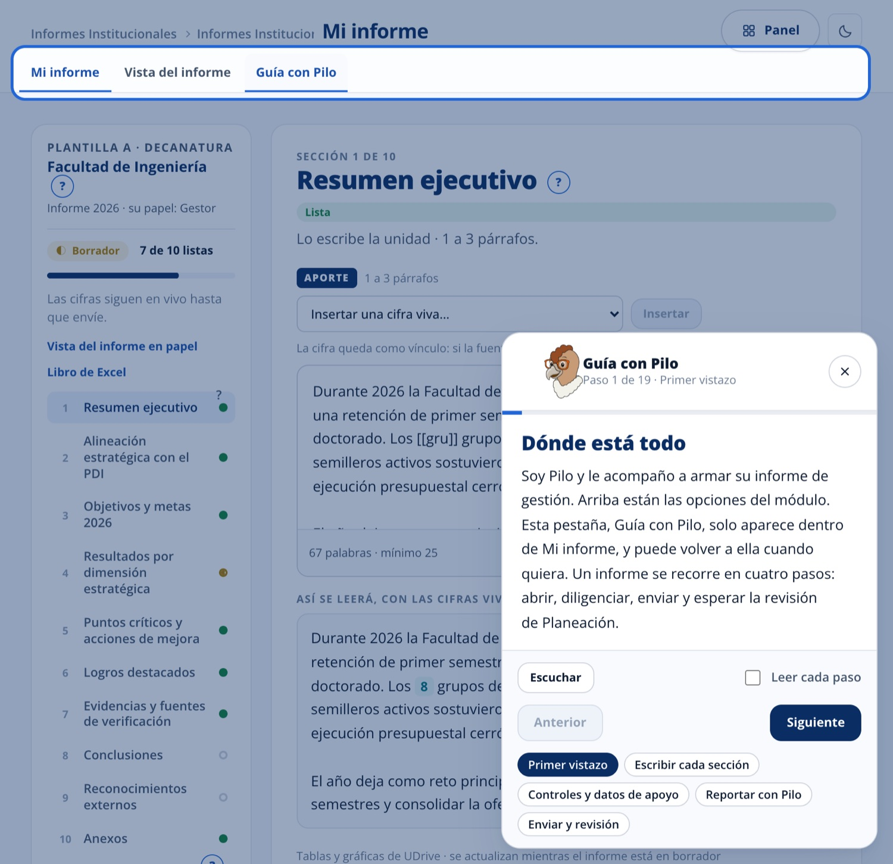
Texto: resumen, introducción y conclusiones
Las secciones de texto piden un aporte con una extensión mínima de palabras; el contador dice «N palabras · mínimo M». Dentro del texto no se escriben cifras: se insertan con «Insertar una cifra viva…» y el botón «Insertar». La cifra queda como vínculo, y si la fuente cambia, el texto cambia.
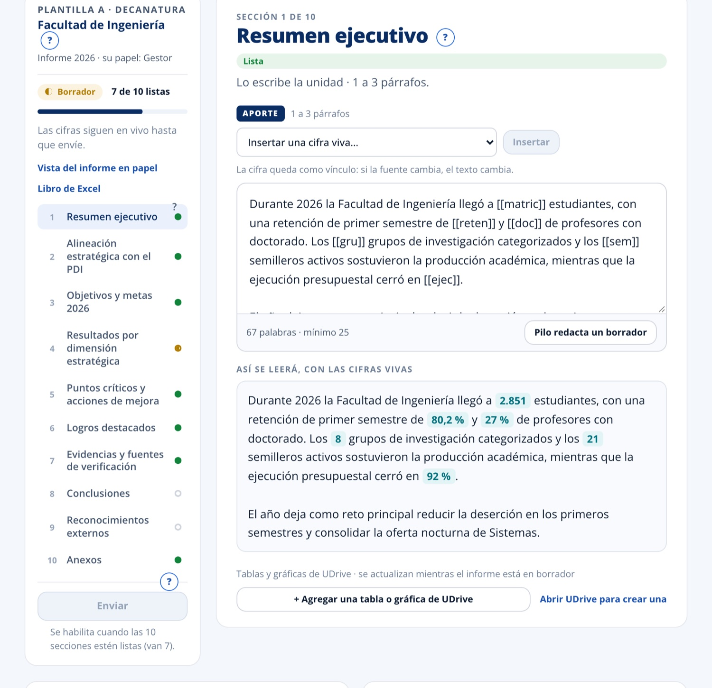
1234Elija una cifra del desplegable y pulse «Insertar». Cada opción dice su valor actual. La cifra queda como vínculo.
El contador dice «N palabras · mínimo M». Si escribe un número, aparece un aviso ámbar: «Hay N cifras escritas a mano» (los años no cuentan). Si queda un «[corchete]» o un «ejemplo:», el control dice «El texto parece un ejemplo de la plantilla. Reemplácelo.»
Propone un texto con vínculos a cifras, nunca con cifras sueltas. Si ya hay texto, pide confirmar el reemplazo. Revise cada cifra antes de aceptar.
Muestra el texto como saldrá, con cada cifra resuelta a su valor.
Las cifras
Una cifra viene de una fuente. Las que tienen fuente automática se leen en vivo; las demás las escribe la unidad y exigen el nombre de su fuente.
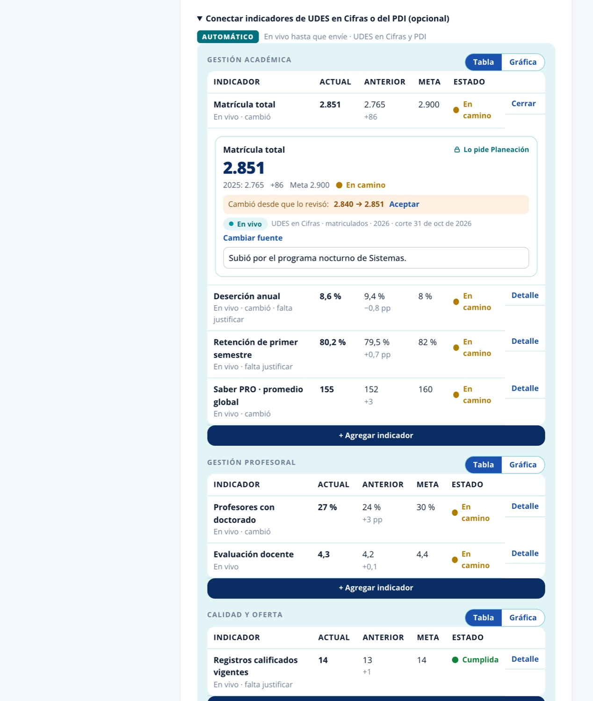
| Fuente | Cómo se ve | Qué exige |
|---|---|---|
| UDES en Cifras | «En vivo» y, al enviar, «Foto del…» | Nada: se lee sola. |
| Indicador del PDI | «En vivo» | Nada. |
| Excel propio, dato manual o documento | «Fuente propia» | Nombre de la fuente; y pilar del PDI si Planeación lo exige. |
Cuando una cifra cambia desde que usted la revisó, la tarjeta dice «Cambió desde que lo revisó: X → Y» con el botón «Aceptar». Si Planeación marcó una cifra como «Lo pide Planeación», aparece con candado y un campo «Explique este resultado en una línea», obligatorio.
Alineación con el PDI
Aquí se elige a qué pilares del Plan de Desarrollo contribuye la unidad y se redacta ese aporte, con sus acciones. El avance de cada pilar viene del Plan; usted decide con cuáles se articula.
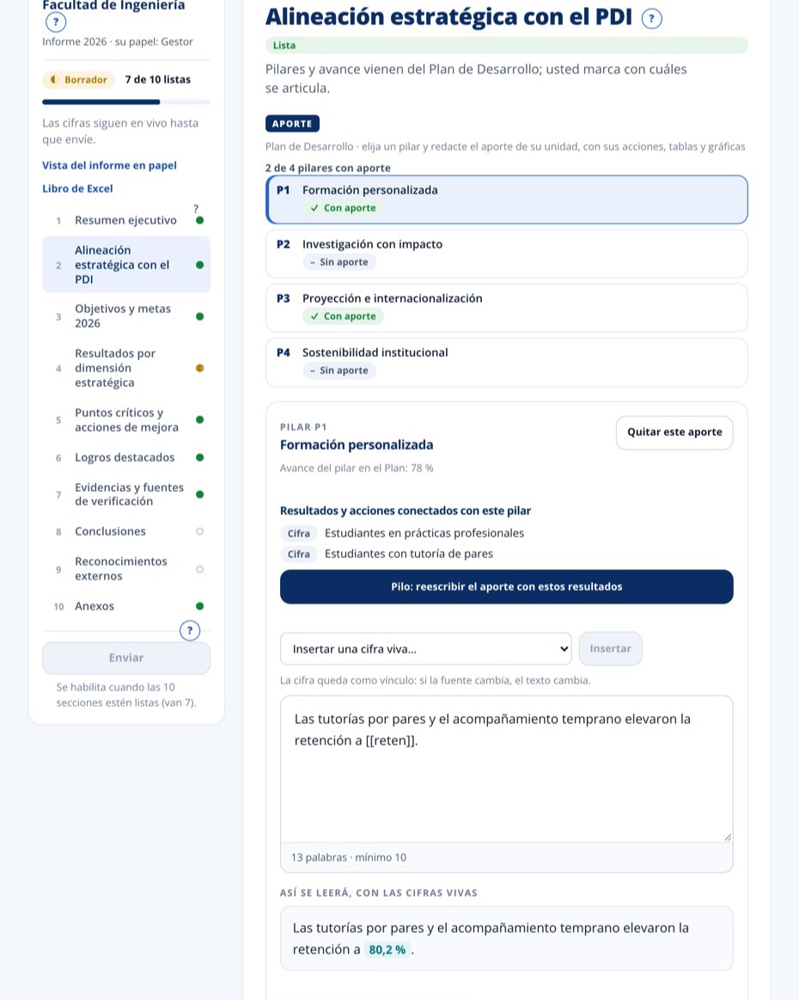
En la lista de «Pilares del Plan de Desarrollo» cada pilar dice «Sin aporte», «Por redactar», «Aporte corto» o «Con aporte». Pulse «Redactar aporte a este pilar».
El aporte necesita al menos 10 palabras. Pilo puede redactarlo con los resultados conectados con ese pilar.
«+ Agregar una acción» con nombre corto, qué se hizo y qué resultó. A cada acción se le pueden agregar tablas de Excel o de UDrive.
La sección queda lista cuando hay al menos un pilar con aporte de 10 palabras o más y ninguna acción sin título.
Objetivos y metas
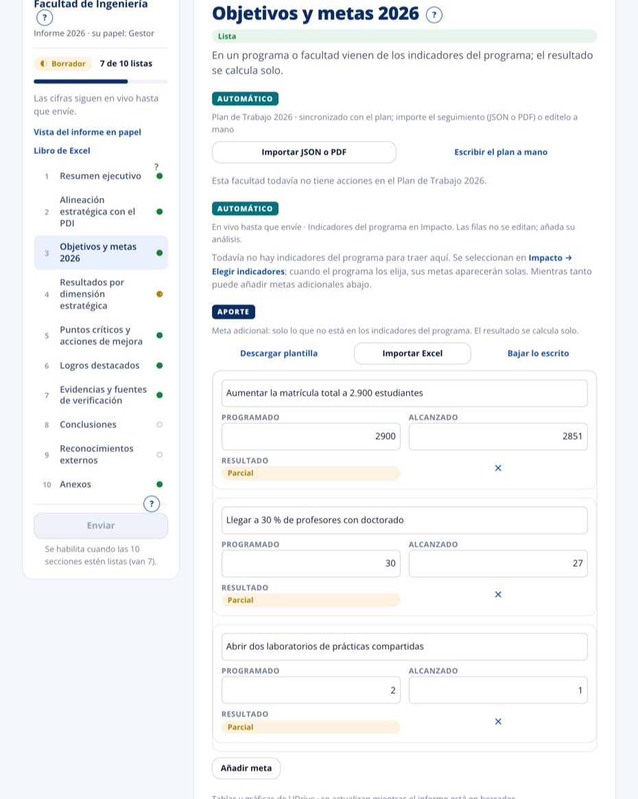
Si su unidad tiene Plan de Trabajo, las acciones llegan sincronizadas; también puede importar el seguimiento en JSON o PDF con «Importar JSON o PDF» y revisar la vista previa antes de «Usar este plan». Los programas y facultades con indicadores elegidos en Impacto ven sus metas en una tabla bloqueada, y solo escriben el análisis de cada una.
Las metas adicionales se escriben en la tabla «Meta, Programado, Alcanzado», con «Añadir meta». El resultado, «Superada», «Cumplida» o «Parcial», lo calcula el informe. Alcanzado puede quedar vacío si el año no ha terminado, pero la sección solo queda lista cuando todas las metas tienen programado y alcanzado.
Resultados por dimensión
Es la sección más extensa. Empieza con «¿A qué criterios reporta su oficina?». Ningún criterio es obligatorio: marque solo los que aplican y cada uno abre su formulario de indicadores y acciones.
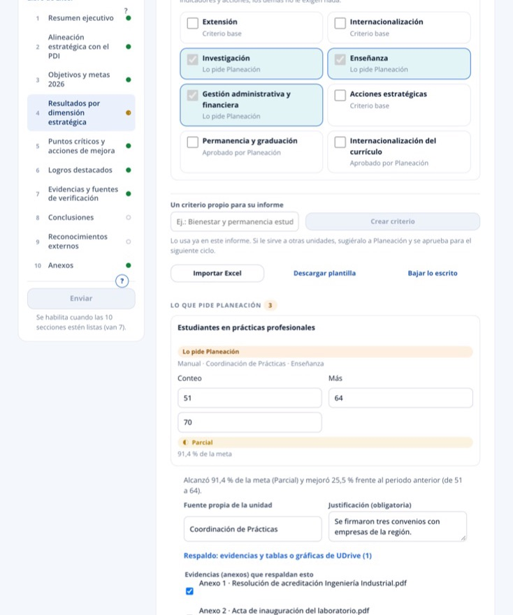
- Cifras. Indicador, unidad, qué es mejor, año anterior, cifra actual, meta y estado calculado: «Superada», «Cumplida», «Parcial» o «Rezagada», con forma y palabra. Cada fila lleva una frase de lectura que dice cuánto de la meta se logró.
- Acciones. Nombre, descripción, qué se ha hecho, cuándo se plantea su finalización y proyecciones. Una acción está completa con nombre, descripción y qué se ha hecho.
- Lo que pide Planeación. Si Planeación configuró datos requeridos, aparecen en un bloque aparte con justificación obligatoria.
- Criterio propio. Si falta un criterio, créelo para su informe con «Crear criterio». Para que sirva a otras unidades, use «Sugerir a Planeación para próximos ciclos».
- Excel. «Descargar plantilla», «Importar Excel» y «Bajar lo escrito». Vea el capítulo 7.
Al final de la sección hay un campo de análisis donde usted escribe su lectura de los resultados, con ayuda de «Pilo mejora el texto».
Síntesis, puntos críticos y logros
- Síntesis. La matriz se arma sola con las metas y los resultados. Usted escribe un comentario de media página, mínimo 10 palabras, que explique los semáforos amarillos y rojos.
- Puntos críticos o retos y oportunidades. Una fila por punto, con acción y fecha. Se escribe en la tabla con «Añadir fila» o se importa de Excel. La sección queda lista con al menos una fila completa.
- Logros. Un logro por fila, con contexto, resultado y la evidencia que lo respalda. No hay tope. Son los logros innovadores o excepcionales del año, no la actividad ordinaria. Cargue primero los archivos en Evidencias para enlazarlos.
Evidencias y fuentes de verificación
Es obligatoria. Sin al menos un archivo o enlace, el informe no se puede enviar.
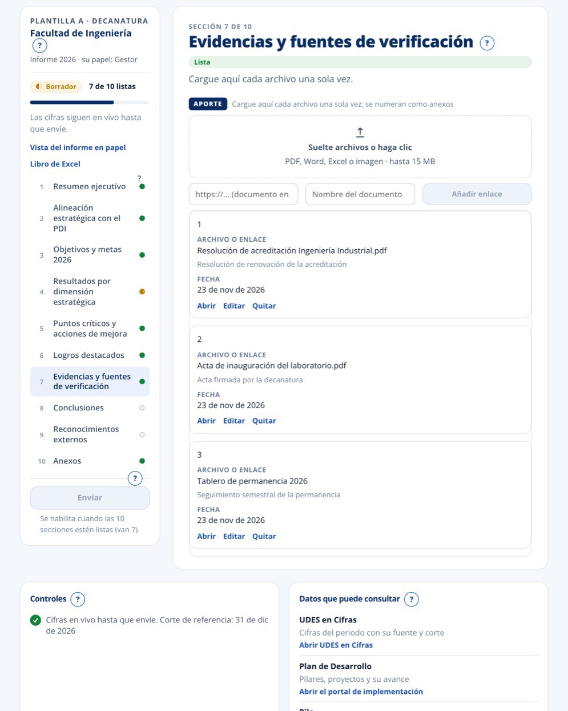
Suelte o elija PDF, Word, Excel o imagen, de hasta 15 MB. Puede subir varios a la vez. Un archivo más pesado se rechaza con el aviso «pesa más de 15 MB».
Escriba la dirección completa, que empiece por https://, el nombre del documento y pulse «Añadir enlace».
Cada anexo recibe un número. «Abrir» lo muestra, «Editar» cambia nombre, enlace o descripción conservando el número, y «Quitar» lo borra.
Más abajo, «Evidencias de actividades e indicadores» ofrece los enlaces que la unidad ya cargó en el Plan de Trabajo y en Impacto; «Añadir las N como anexos» los numera y los deja citables.
Enviar
El botón «Enviar» está al pie del riel. Mientras haya algo pendiente, está deshabilitado y debajo dice qué falta.
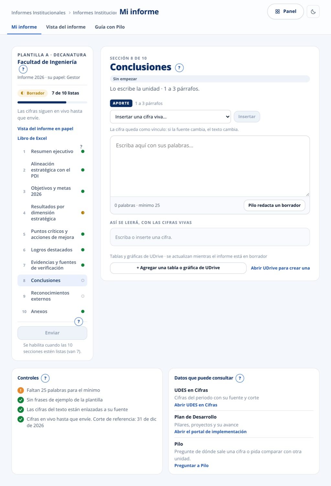
| Lo que dice debajo del botón | Qué hacer |
|---|---|
| Se habilita cuando las N secciones estén listas (van K). | Abra cada sección cuyo punto no sea verde y lea sus controles. |
| Faltan las evidencias y fuentes de verificación… | Suba al menos un archivo o enlace. |
| Falta justificar (y dejar incluidas) las cifras… | Escriba la justificación de las cifras que pide Planeación, o pídale que las pase a «No pedir». |
| Falta el nombre de la fuente en… | Cada dato propio necesita su fuente. |
| El ciclo no está abierto: no se puede enviar | Es una decisión de Planeación. Consúltela. |
Cuando todo está listo, el mensaje cambia a «Todo listo. Al enviar, el informe queda aprobado, con la foto de las cifras, y se bloquea.» Al pulsar, el servidor guarda lo pendiente, toma la foto de las cifras y aprueba el informe en el mismo paso. Después, Pilo aprende del informe.
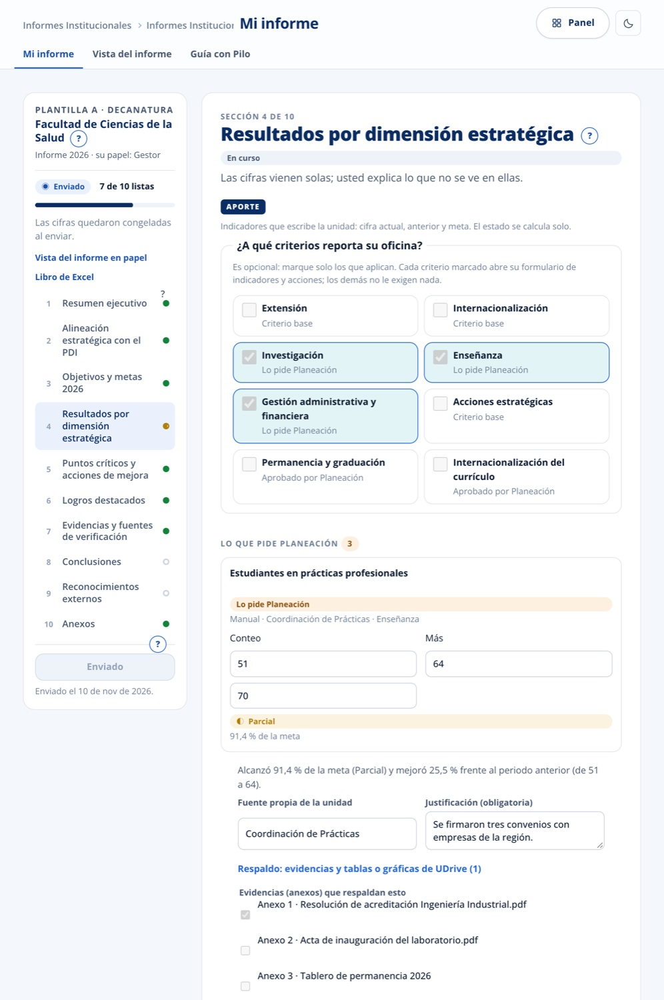
Si lo devuelven
El informe pasa a Devuelto. En el riel aparece «Planeación lo devolvió» con la nota general, y en cada sección «Planeación pide en esta sección» con la nota de esa parte. Las cifras vuelven a ser vivas.
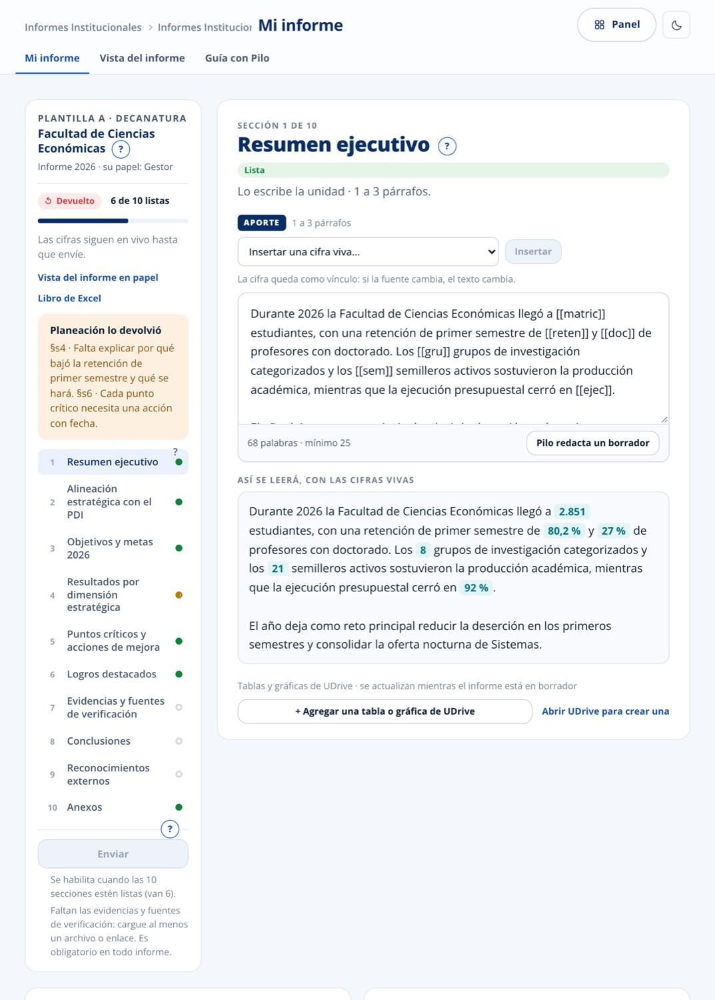
Corrija lo que pide la nota. En cuanto guarde cualquier cambio, el informe vuelve a ser borrador. Cuando todo esté listo, «Enviar» otra vez toma una foto nueva.
En el teléfono
Las secciones del riel se convierten en una tira horizontal que se desliza, y el editor ocupa todo el ancho. Se puede escribir y enviar desde el celular, aunque para tablas y resultados conviene una pantalla grande.
El color de acento, el monograma, el escudo, el contacto y la línea del pie de la oficina. Valen para todos los informes de la unidad. Se hacen desde la Vista del informe (capítulo 8).
El Contribuyente usa las mismas pantallas que el Gestor y escribe las mismas secciones. La diferencia es corta: no envía el informe y no cambia el perfil de la oficina. Su trabajo termina cuando deja todo listo para que el Gestor envíe.
Qué puede y qué no puede
- Abrir Mi informe y escribir todas las secciones.
- Subir, enlazar, editar y quitar evidencias.
- Usar a Pilo para redactar o mejorar texto.
- Exportar e importar el libro de Excel.
- Cambiar la composición, los textos, la imagen, las firmas y los créditos de la portada y el cierre.
- Reabrir un informe devuelto: al guardar, vuelve a borrador.
- Enviar. El botón queda deshabilitado.
- Cambiar el acento, el monograma, el escudo, el contacto ni el pie de la oficina.
- Devolver un informe.
- Ver el Tablero, la Revisión, el Consolidador, la Capacitación ni las Estructuras.
- Escribir tras el envío ni en secciones «Solo lectura».
Su recorrido
Abra «Informes de gestión». Las pestañas que ve son «Mi informe», «Vista del informe» y «Guía con Pilo». Cualquier otra lo devuelve a Mi informe.
En el riel dice «su papel: Contribuyente». Abajo, el botón «Enviar» muestra: «Solo el Gestor de la unidad o Planeación envían el informe.» Es normal.
Siga el capítulo 4: texto con cifras vivas, alineación, metas, resultados, síntesis, puntos críticos, logros y evidencias.
Cada sección tiene su lista de «Controles». Deje todos los puntos en verde y al menos una evidencia cargada.
Cuando todas las secciones estén «Lista», el Gestor puede enviar. El módulo no avisa por correo: avíselo usted.
Qué ve tras el envío
| Estado | Qué ve y qué puede hacer |
|---|---|
| Borrador | Escribe y guarda. El botón «Enviar» sigue deshabilitado. |
| Aprobado | Solo lee. El riel dice «Enviado y aprobado el…» y el libro de Excel no deja importar: «El informe ya se envió: no admite cambios. Pida que lo devuelvan para modificaciones.» |
| Devuelto | Ve la nota general y la de cada sección. Al guardar, el informe vuelve a borrador. El Gestor lo reenvía. |
Portada y cierre
En «Vista del informe» puede «Personalizar portada» y «Personalizar cierre». Los campos del perfil de la oficina, acento, monograma, escudo, contacto y pie, aparecen bloqueados con el aviso «Solo el Gestor de la unidad o Planeación cambian…».
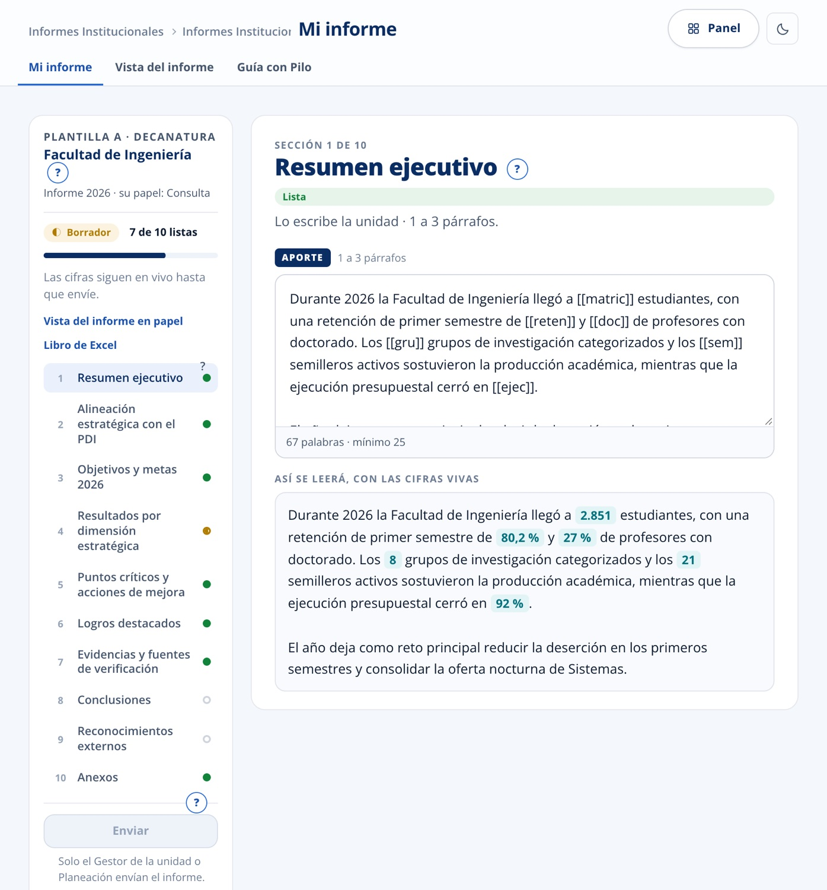
El papel de Consulta
Quien tiene el papel de Consulta ve el informe completo en lectura. Los campos están bloqueados, no aparecen los botones de Excel por sección ni los de Pilo, y el libro de Excel responde «Su papel no permite escribir en este informe.» al intentar importar. Puede descargar el PDF y crear una presentación con Pilo.
Planeación también ve el informe de otra unidad con este papel, bajo el aviso «Administración: solo lectura».
Si no ve nada
| Lo que ve | Qué significa | Qué hacer |
|---|---|---|
| «Su usuario no tiene ninguna unidad asignada en «Dónde trabaja»…» | No tiene papel en ninguna unidad. | Pida a Planeación que la asigne en «Responsables». |
| «Planeación todavía no abre el informe… de su unidad» | El informe aún no existe. | Espere a que Planeación lo abra. |
| «No se guardó: El informe ya se envió (o no es suyo)…» | El informe está aprobado, el ciclo no está abierto o su papel no escribe. | Pida la devolución o revise el estado del ciclo con Planeación. |
| «Esa unidad no está entre las suyas…» | La dirección tiene la unidad de otro. | Vuelva a Mi informe. |
El informe no es un documento que se redacta de cero. Es un formato con partes que se conectan: la plantilla decide las secciones, cada sección sabe de dónde saca sus datos, las cifras se citan con vínculos y todo termina en archivos que salen del mismo modelo.
De la plantilla al archivo
Todos los exportables salen del mismo modelo del editor. Lo que usted ve al escribir es lo que aparece en el libro de Excel, en la hoja impresa y en la presentación; no hay un segundo documento que mantener.
Las cuatro plantillas
| Plantilla | La diligencia | Se envía a | Secciones |
|---|---|---|---|
| A | Decanatura | Rectoría de campus | 10: resumen, alineación con el PDI, objetivos y metas, resultados por dimensión, síntesis, puntos críticos, logros, evidencias, conclusiones y anexos. |
| B | Vicerrectoría u oficina | Rectoría General | 9: resumen, alineación, objetivos y metas, resultados y evidencias, logros, retos y oportunidades, evidencia, conclusiones y anexos. |
| C | Rectoría de campus | Rectoría General | 9: resumen del campus, alineación, objetivos y metas, consolidado por función sustantiva, resultados y evidencias, retos, conclusiones, evidencias y anexos. |
| D | Rectoría General | Consejo Superior | 9: presentación del Rector, introducción, una sección por función sustantiva, síntesis y proyecciones, evidencias y anexos. |
Las plantillas C y D traen nueve secciones porque «Evidencias y fuentes de verificación» se agrega a toda estructura. Al abrir un informe, el Tablero sugiere la plantilla según el nombre de la unidad: «rectoría general» usa D; «campus» o «rectoría», C; una facultad, A; el resto, B.
Qué hace cada tipo de sección
| Tipo | Qué se hace | Cuándo queda lista |
|---|---|---|
| Texto | Se escribe con cifras vivas y, si quiere, con un borrador de Pilo. | Llega al mínimo de palabras. |
| Alineación con el PDI | Se elige un pilar y se redacta el aporte con sus acciones. | Hay un pilar con aporte de 10 palabras o más y ninguna acción sin título. |
| Objetivos y metas | El plan de trabajo y las metas llegan solos; se agregan metas propias. | Cada meta tiene programado y alcanzado. |
| Resultados | Cifras y acciones por criterio, y lo que pide Planeación. | Lo pedido está justificado y los indicadores y acciones están completos. |
| Síntesis | La matriz se arma sola; se escribe un comentario. | El comentario tiene 10 palabras o más. |
| Tabla de filas | Una fila por punto crítico o por reto. | Hay al menos una fila completa. |
| Logros | Un logro por fila, con su evidencia. | Hay al menos un logro con título y resultado. |
| Evidencias | Archivos y enlaces, cargados una sola vez. | Hay al menos un anexo. |
| Anexos | La lista numerada se arma sola. | Siempre lista. |
Cifras vivas y vínculos
Un texto cita una cifra con su clave entre dobles corchetes, como [[matric]]. El editor la muestra como una etiqueta con el valor, y al pasar el cursor dice de dónde sale. Si la clave no existe o no tiene valor, se ve el código tal cual, con el aviso «Esta cifra no tiene valor o no existe en el informe».
| Momento | Qué muestra la cifra | Dónde se ve |
|---|---|---|
| Borrador | El valor en vivo de su fuente. | Etiqueta «En vivo»; «Cifras en vivo» en cada hoja impresa. |
| Al enviar | El servidor toma la foto: valor, fuente y fecha. | Etiqueta «Foto del…». |
| Si lo devuelven | Se borra la foto. Las cifras vuelven a ser vivas. | «En vivo» otra vez. |
Las cifras tienen seis fuentes posibles: UDES en Cifras, indicador del PDI, aportes aprobados, Excel propio, dato manual y documento o enlace. Las tres últimas son «fuente propia»: exigen nombre de la fuente y cuentan para el límite de datos propios por sección que fija Planeación.
Lo que exige cada requisito
Planeación fija, por plantilla, lo que cada unidad debe justificar. Esos requisitos viajan con el informe y se comprueban al enviar:
| Requisito | Cuándo bloquea el envío | Dónde se configura |
|---|---|---|
| Justificar una cifra | Siempre que la cifra esté marcada «Justificar» y no tenga su justificación. | Tablero · «Qué datos debe justificar cada unidad». |
| Datos que pide Planeación | Cuando un dato «Justificar» no tiene cifra actual, meta y justificación de 10 caracteres o más. | Tablero · «Los datos que pide cada tipo de unidad». |
| Fuente de datos propios | Si se exige fuente y falta el nombre. | Tablero · «Los datos libres». |
| Pilar del PDI | Si se exige un pilar y falta. | Tablero · «Los datos libres». |
| Evidencia | Siempre, si no hay ni un anexo. | No se configura: es fija. |
Qué sale del informe
| Acción | Qué sale | Nombre del archivo |
|---|---|---|
| Mi informe · Libro de Excel · Descargar libro | El informe completo para diligenciar fuera del portal. | Informe_Gestion_2026_A.xlsx |
| Libro de Excel · Un libro por equipo | Un libro por equipo, solo con sus hojas. | Informe_Gestion_2026_A_secretaria-academica.xlsx |
| Sección · Descargar plantilla | Plantilla de una sola sección. | plantilla-puntos-criticos.xlsx |
| Sección · Bajar lo escrito | Lo escrito en la sección. | puntos-criticos.xlsx |
| Tablero · Bajar Excel | Datos que pide Planeación. | datos-requeridos.xlsx |
| Vista del informe · Descargar PDF | El informe en Carta o A4, por la impresión del navegador. | Informe de gestión 2026 - Facultad de Ingeniería |
| Presentación · PDF / Imprimir | Las diapositivas, en 16:9. | El título de la presentación |
Word no está disponible. Si necesita texto editable, use el libro de Excel o copie desde la pantalla.
El libro de Excel sirve para recoger información fuera del portal: el Gestor lo descarga, cada equipo llena sus hojas y el Gestor lo importa de vuelta. Cada hoja corresponde a una sección del informe y trae sus columnas, sus listas y sus colores.
Descargar el libro
En Mi informe, el enlace «Libro de Excel» del riel abre un cajón con dos pasos: «1 · Exportar» y «2 · Importar». Lo ven todos los papeles, pero solo importan Gestor y Contribuyente.
 1234
1234«Un libro completo» entrega todas las hojas en un solo archivo. En «Hojas · N de M» se marca con «Incluir» cada sección; cada una lleva una etiqueta: «Automática», «Cifras y acciones de la unidad» o «Se diligencia».
Reparte las secciones entre equipos y descarga un libro por equipo, solo con sus hojas. Elija o escriba el equipo de cada hoja: «Quien lidera el informe», «Decanatura», «Dirección de programa», «Coordinación de investigación», «Coordinación de extensión» o «Secretaría académica».
La casilla viene marcada. Protege cada hoja sin contraseña: solo se escribe en las celdas de color. Se quita en Excel desde Revisar, Desproteger hoja.
El segundo paso, para cargar el libro devuelto.
«Descargar libro» o «Descargar N libros» entrega los archivos. Si el navegador pide permiso para varias descargas, acéptelo.
El archivo se llama Informe_Gestion_2026_A.xlsx: año del ciclo y plantilla. Los libros por equipo agregan el equipo en minúscula, sin tildes y con guiones: Informe_Gestion_2026_A_secretaria-academica.xlsx.
Qué trae cada libro

La primera hoja, «00 Portada», dice de quién es el libro: unidad, plantilla, destino, ciclo, equipo, fecha de exportación y las seis instrucciones. Cada hoja siguiente es una sección y se llama con su número y su título, como «06 Puntos críticos…». Los colores son siempre los mismos:
| Color | Qué significa |
|---|---|
| Azul claro | Se diligencia, pero es opcional. |
| Amarillo | Es obligatoria. |
| Gris | La pone el sistema. Está bloqueada y no se escribe. |
Cada hoja tiene una banda azul de tres filas arriba, con el título, el subtítulo y una ayuda. El encabezado de columnas está en la fila 4 y los datos empiezan en la fila 5. Debajo de los datos hay filas libres con color y lista desplegable, listas para escribir.
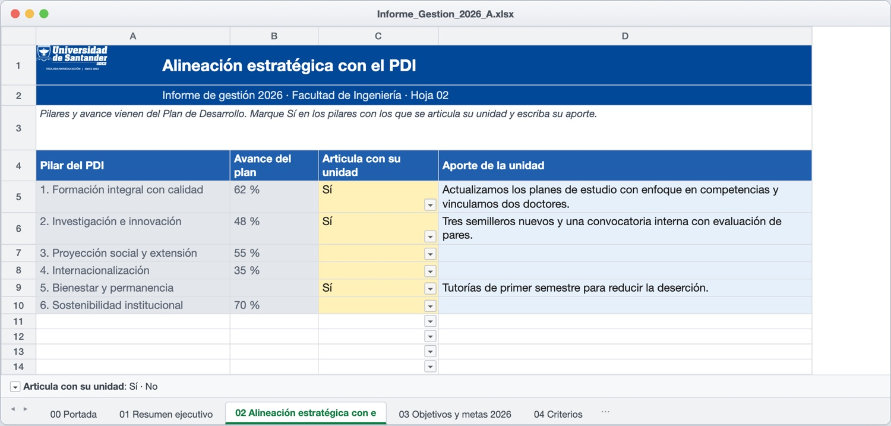
| Hoja | Columnas que se llenan | Notas |
|---|---|---|
| Resumen ejecutivo, Conclusiones | Texto de la sección (amarilla). «Palabras» la cuenta el sistema. | Las cifras vivas se citan con [[clave]]. |
| Alineación estratégica | «Articula con su unidad» (Sí/No) y «Aporte de la unidad». «Pilar del PDI» y «Avance del plan» vienen del Plan. | Una fila por pilar. |
| Objetivos y metas | «Objetivo o meta anual», «Programado» (obligatoria) y «Alcanzado». «Resultado» lo calcula el informe. | El libro vacío trae dos filas de ejemplo marcadas «(borre esta fila)». |
| Criterios | «¿Reporta aquí?» (Sí/No). Seis filas libres al final para un criterio propio. | Solo los criterios con «Sí» salen en la hoja de resultados. |
| Resultados | Criterio, indicador, unidad, qué es mejor, año anterior, cifra actual, meta, fuente, nota, tipo (Cifra o Acción), descripción de la acción, qué se ha hecho, finalización, proyecciones, pilar y número de anexos. | Una fila por cifra o por acción. «Estado» lo calcula el sistema. |
| Síntesis | Ninguna: toda es de referencia. | No se importa. |
| Puntos críticos | Dimensión (lista), punto crítico, acción, tiempo y recursos. | En B y C se llama «Retos y oportunidades». |
| Logros | Logro, contexto y resultado, número de anexo. | El número remite a la hoja de evidencias. |
| Evidencias | Documento, descripción y enlace https://. | Los archivos ya cargados viajan en el libro; los nuevos se suben desde el informe. |
| Anexos | Ninguna. | Es de referencia y no se importa. |

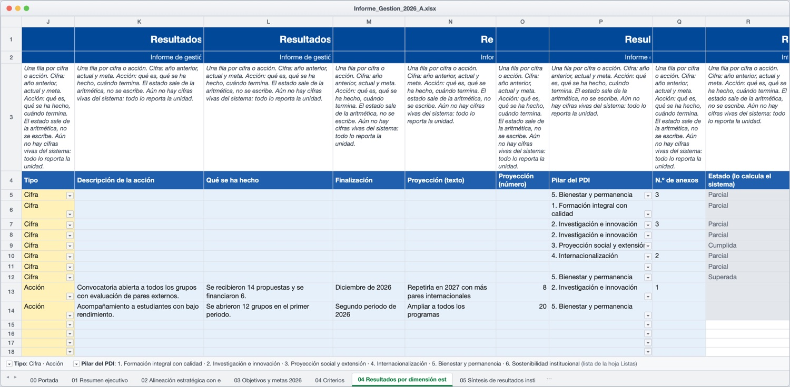
Repartir el libro entre equipos
Cuando el informe necesita aportes de varias oficinas, el Gestor descarga un libro por equipo. Cada uno trae solo las hojas que le tocan, pero conserva el control de la estructura completa.
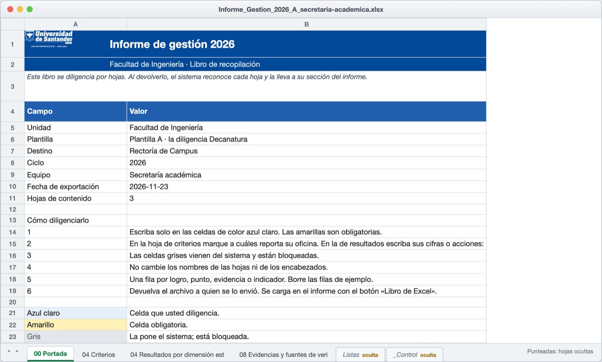
Envíe a cada equipo su archivo. No les envíe el libro completo: puede escribir encima de lo de otros.
Solo en las celdas de color. Si el equipo no tiene la información, deja la fila vacía.
Cada equipo devuelve su libro. El Gestor los importa uno tras otro; cada uno conserva la huella de la estructura.
Las hojas ocultas
El libro lleva dos hojas ocultas que no se tocan. «Listas» alimenta las listas desplegables: si se borra, dejan de funcionar. «_Control» une el libro con el informe: guarda el formato, el ciclo, la plantilla, el informe, la unidad y la huella de la estructura.
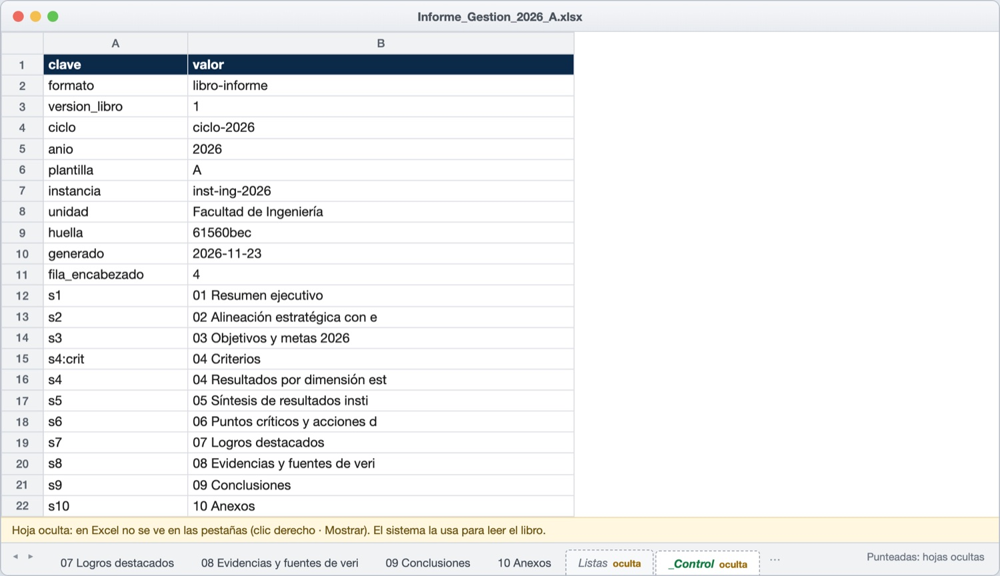
Importar el libro devuelto
En «2 · Importar» se arrastra el .xlsx. Solo se leen archivos .xlsx; si lo tiene en .xls o .csv, guárdelo antes como .xlsx.

El sistema valida el libro. Lo rechaza si es de otra unidad, de otro ciclo o de otra plantilla.
Cada hoja muestra su destino y su confianza: «Por _Control · 100 %», «Reconocida», «Revisar» o «Sin destino». Puede cambiar el destino o elegir «No importar esta hoja».
Los contadores dicen cuántas filas están listas, cuántas tienen aviso y cuántas no se importan. La lista de avisos dice la hoja, la fila y el problema.
Vea la tabla siguiente.
El campo «Quién aporta este libro» deja constancia en el aviso final y en la descripción de las evidencias nuevas.
«Aplicar al informe». Se escribe por la misma ruta que el editor: guardado inmediato y recálculo de las secciones listas.
| Modo | Qué hace | Cuándo usarlo |
|---|---|---|
| Agregar al final | Suma lo del libro a lo escrito. Lo que ya existe no se toca. Las filas idénticas se omiten. | Casi siempre. Es el modo por defecto. |
| Llenar solo lo vacío | Completa las celdas vacías del informe y suma las filas que no existen. Nada de lo escrito se cambia. | Cuando el equipo completó lo que faltaba. |
| Reemplazar la sección | Lo del libro queda en lugar de lo que había en cada sección importada. Pide confirmación. | Cuando el libro es la versión definitiva. No reemplaza evidencias: solo agrega las nuevas. |
Los avisos y cómo resolverlos
Un aviso no siempre impide importar: una fila incompleta entra, pero la sección no queda lista hasta completarla. Estos son los más frecuentes, con el texto que usted verá.

La lista es una reproducción del panel de avisos con el texto exacto que devuelve el importador al leer un libro con errores a propósito. La pantalla real muestra los primeros 60.
| Aviso | Qué hacer |
|---|---|
| «cuatro» no es un número en Programado. | Escriba el número con cifras. Admite coma decimal. |
| Falta «Programado». | Complete la celda amarilla. Una meta sin programado no deja lista la sección. |
| «Tal vez» no es Sí ni No; se omitió. | En «¿Reporta aquí?» y «Articula con su unidad» solo valen Sí o No. |
| El pilar «…» no es uno del Plan de Desarrollo; se omitió. | Elija un pilar de la lista desplegable. |
| Falta la cifra actual / la meta / la descripción de la acción. | Complete la celda; en una acción hacen falta la descripción y qué se ha hecho. |
| Sin enlace https://. Los archivos se suben desde la sección de evidencias. | Escriba un enlace que empiece por https://. Para un archivo, súbalo desde Evidencias. |
| Una fila tiene una dimensión que no es ninguna de las conocidas; se importó como texto libre. | Use la lista de dimensiones si quiere que se clasifique. |
| Filas de ejemplo omitidas. | Es normal: se ignoran las que dicen «(borre esta fila)». |
| El informe ya se envió: no admite cambios. | Pida a Planeación o a la unidad destino que lo devuelva. |
| Su papel no permite escribir en este informe. | Es el papel de Consulta. Pida el cambio de papel. |
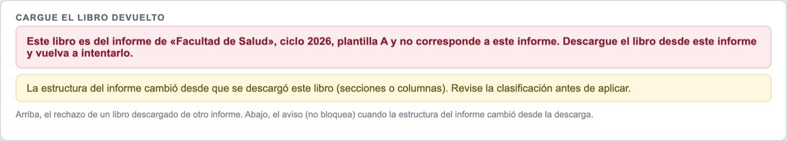
Si el libro es de otra unidad, de otro ciclo o de otra plantilla, el sistema lo rechaza sin leerlo, con un mensaje que dice a qué informe pertenece. Descargue un libro nuevo desde este informe.
Plantillas de una sola sección
Dentro de las secciones de tabla, metas, logros y resultados hay botones «Descargar plantilla», «Importar Excel» y «Bajar lo escrito». Son más sencillas: una sola hoja, «Filas», con el encabezado en la fila 1, y una hoja «Cómo llenar…».
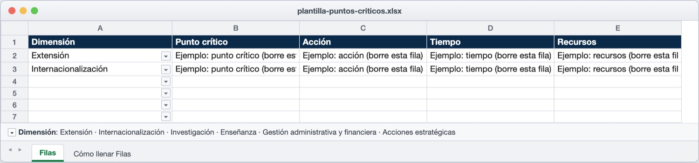
| Sección | Archivo de la plantilla | Columnas |
|---|---|---|
| Puntos críticos | plantilla-puntos-criticos.xlsx | Dimensión, Punto crítico, Acción, Tiempo, Recursos |
| Retos y oportunidades | plantilla-retos-oportunidades.xlsx | Reto, Aprendizaje, Oportunidad, Propuesta |
| Objetivos y metas | plantilla-objetivos-y-metas-anuales.xlsx | Objetivo o meta anual, Programado, Alcanzado |
| Logros | plantilla-logros.xlsx | Logro, Contexto y resultado, N.º de anexo |
| Resultados | plantilla-resultados-y-evidencias.xlsx | Hojas Cifras y Acciones, con Criterios y Pilares como listas |
El importador muestra una vista previa y se elige «Añadir a lo que ya hay» o «Reemplazar todo». Admite hasta 500 filas. Si los encabezados no coinciden, lee por posición de columna y lo avisa.
El archivo del Administrador
Planeación tiene su propio Excel: datos-requeridos.xlsx, con las columnas Plantilla, Dato, Fuente (tipo), Fuente (nombre), Criterio, Unidad, Qué es mejor y Condición. Al subirlo, las filas se añaden a lo configurado en cada plantilla.
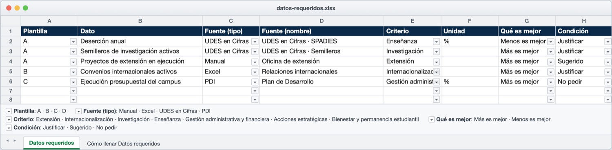
La pestaña Vista del informe muestra el documento como saldrá en papel, con su portada, su índice, sus secciones, su cierre y su contraportada. Es la misma información del editor, armada en hojas. Desde aquí se descarga el PDF y se crea una presentación con Pilo.
La vista en papel
Se llega desde Mi informe con «Vista del informe en papel», desde el Tablero con «Vista del informe» en cada fila, o desde Revisión. Cada hoja del informe abre en página nueva y las secciones largas siguen en hojas de continuación.
Es el papel predeterminado: 215,9 × 279,4 mm. Los márgenes ya vienen fijados. Se guarda por informe si quien lo cambia puede editar el diseño; si no, vale solo para esa sesión.
210 × 297 mm. El aviso de estado de arriba dice «Las cifras están en vivo…» en borrador, o «Foto del…» y que las cifras ya no cambian si está aprobado.
Abre el editor de la portada. Junto a él están «Personalizar cierre», «Crear presentación con Pilo» y «Presentaciones de este informe».
Abre la previsualización del PDF.
El libro se compone así: portada, contenido con números de página reales, hojas de cuerpo, página de cierre y contraportada. El botón de descarga espera a que el sistema termine de medir las páginas y de leer las tablas y gráficas de UDrive.
Personalizar la portada
«Personalizar portada» abre un editor a pantalla completa con la vista previa a un lado. Todo se guarda con «Guardar la portada».
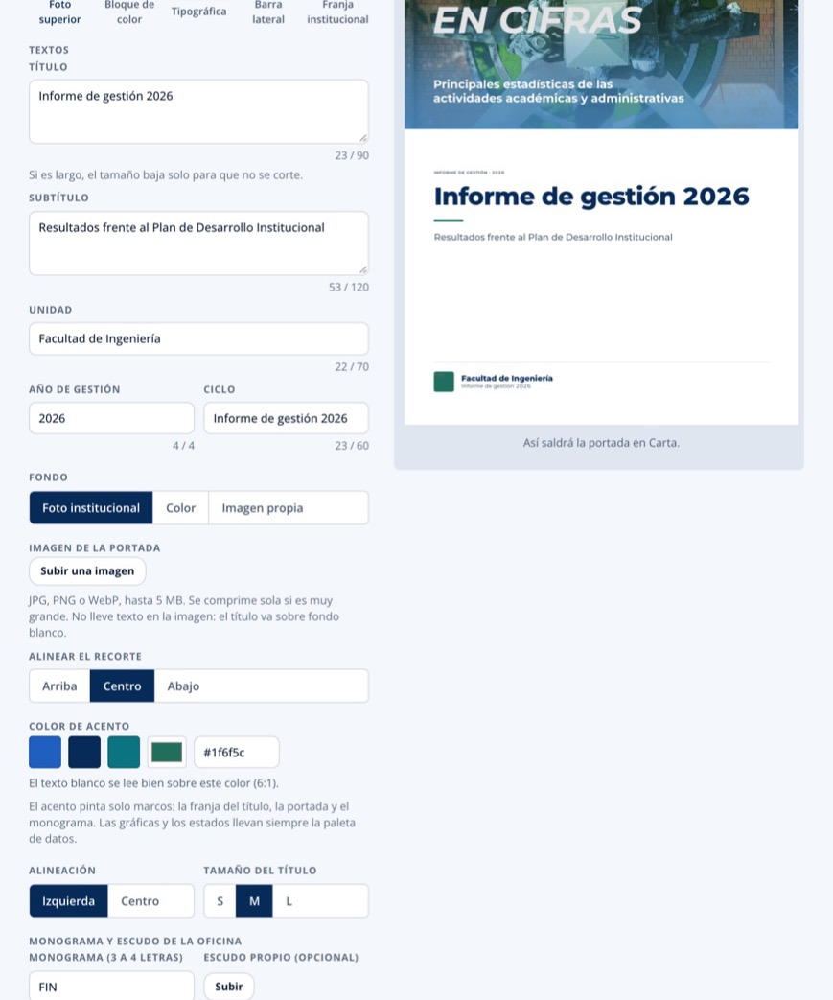
| Campo | Qué hace | Quién lo cambia |
|---|---|---|
| Composición | Cinco: «Foto superior», «Bloque de color», «Tipográfica», «Barra lateral» y «Franja institucional». | Gestor y Contribuyente |
| Textos | Título (90), subtítulo (120), unidad (70), año de gestión y ciclo. | Gestor y Contribuyente |
| Fondo e imagen | Foto institucional, color o imagen propia en JPG, PNG o WebP de hasta 5 MB. Zoom y alineación del recorte. | Gestor y Contribuyente |
| Alineación y tamaño | Izquierda o centro; título S, M o L. | Gestor y Contribuyente |
| Color de acento | Tres sugeridos o uno libre. Debe tener un contraste de 4,5 a 1 como mínimo. | Solo el Gestor |
| Monograma y escudo | De 3 a 4 letras o números; escudo PNG o WebP opcional. | Solo el Gestor |
El logo de la UDES y su lugar los fija Planeación y no se pueden quitar. Si usted no puede cambiar la portada, el editor lo dice: «Usted puede ver la portada, pero no cambiarla: el informe está enviado o su papel solo permite consultar.»
Personalizar el cierre
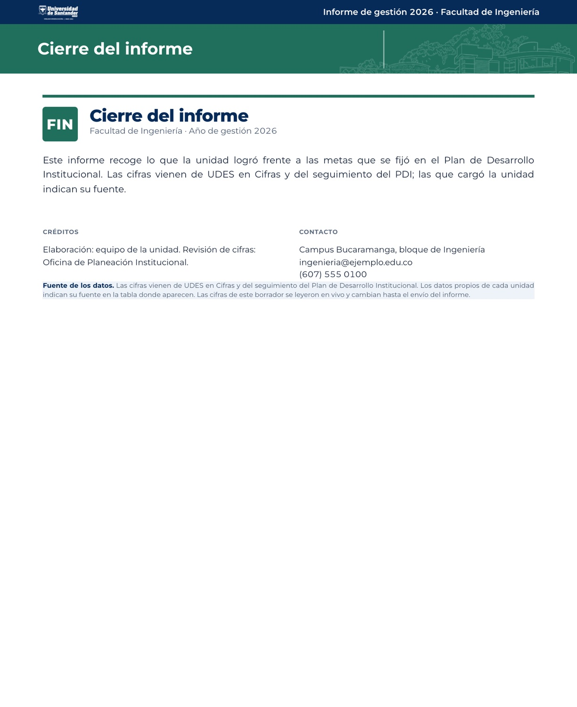
- Página de cierre. Un mensaje de hasta 420 caracteres y hasta tres responsables, con nombre y cargo. Una fila vacía no se imprime.
- Créditos. «Elaboración y revisión», hasta 240 caracteres.
- Contacto. Correo, teléfono, dirección, sitio web y la línea del pie de página. Si queda vacía, el pie lleva el nombre de la unidad. Solo el Gestor lo cambia.
- Contraportada. Tono: «Azul marino», «Color de la oficina» o «Blanco con foto», y una frase opcional.
El aviso sobre la fuente de los datos lo redacta Planeación y se imprime siempre en la página de cierre. La contraportada imprime siempre la línea de campus «Bucaramanga · Cúcuta · Valledupar · Bogotá»; el editor no tiene un interruptor para quitarla.
Descargar el PDF
«Descargar PDF» abre la «Previsualización del PDF», con la barra «Volver a la vista», el número de hojas, el zoom y el botón de descarga. El PDF lo genera el navegador al imprimir: no hay un archivo generado en el servidor.
Pulse «Descargar PDF». Si el botón dice «Armando las páginas…», espere.
En el diálogo de impresión elija «Guardar como PDF». El tamaño y los márgenes ya vienen fijados.
El archivo se sugiere como «Informe de gestión 2026 - Facultad de Ingeniería»: año y unidad.
Presentación con Pilo
Desde la vista y desde Revisión, «Crear presentación con Pilo» arma diapositivas con el informe. Pilo lee el informe y no inventa cifras, nombres ni fechas: lo que falte queda como «[por completar]». Usa Pilo Astra 1.0 y puede tardar uno o dos minutos; se puede cancelar.
| Campo | Valores |
|---|---|
| Tono | «Institucional» (sobrio y formal), «Cercano» (cálido y directo), «Ejecutivo» (breve, con la conclusión primero) o «Académico» (preciso y con respaldo). |
| Duración | De 1 a 180 minutos. Opcional. |
| Enfoque | Hasta 300 caracteres. Opcional. |
Un clic en cualquier texto lo vuelve editable; Enter guarda y Esc descarta.
Pantalla completa. También con la tecla P.
Exporta las diapositivas en formato 16:9. El archivo toma el título de la presentación.
Pilo vuelve a armar las diapositivas con otro tono. Cada cifra, enlace y valor de gráfica se comprueba contra el informe.
Cada diapositiva trae notas para quien presenta.
La presentación se guarda al crearla y queda en «Presentaciones de este informe». Solo existe el PDF: no hay archivo .pptx.
Si Pilo Astra está apagado, la ventana dice «Pilo Astra 1.0 se enciende en la administración.» Avise a quien administra.
Los mensajes del módulo dicen casi siempre qué falta. Este capítulo reúne los que más confunden, con su causa real, y los límites que hoy tiene el módulo.
Mensajes y qué hacer
| Lo que ve | Causa | Quién lo resuelve |
|---|---|---|
| «No se guardó: El informe ya se envió (o no es suyo): solo Planeación lo puede cambiar» | Informe aprobado, ciclo en preparación o cerrado, o papel sin escritura. Con el ciclo cerrado el mensaje engaña: habla de envío. | Planeación revisa el ciclo o devuelve el informe. |
| «Su usuario no tiene ninguna unidad asignada en «Dónde trabaja»…» | La persona no tiene papel en ninguna unidad. | Planeación, en Responsables. |
| «Planeación todavía no abre el informe… de su unidad» | El informe no se ha abierto. | Planeación, en el Tablero. |
| «Solo el Gestor de la unidad o Planeación envían el informe.» | Es el papel de Contribuyente o de Consulta. | El Gestor envía. |
| «Se habilita cuando las N secciones estén listas (van K).» | Hay secciones sin terminar. | La unidad, revisando los controles. |
| «Falta justificar (y dejar incluidas) las cifras…» | Cifras marcadas «Justificar» sin su línea. | La unidad, o Planeación pasándolas a «No pedir». |
| Una cifra «Lo pide Planeación» que el sistema no trae | UDES en Cifras y el PDI aún no alimentan las 14 cifras automáticas. | Planeación decide: justificar a mano o «No pedir». |
| «Esta sección ya tiene N datos propios: es el límite del ciclo» | Se llegó al tope de datos propios por sección. | Quitar uno, o Planeación sube el tope. |
| «Este libro es del informe de «X»… no corresponde a este informe» | Se importó el libro de otra unidad, ciclo o plantilla. | Descargar el libro desde este informe. |
| El PDF dice «Cifras en vivo» | El informe aún es borrador. | Se congela al enviar. |
| «No se pudo llegar a la función pilo-informes» | La función de Pilo no responde. | Avisar a soporte. El informe se puede seguir escribiendo. |
| «Falta aplicar la migración…» | Falta una actualización de la base de datos. | Equipo técnico. |
Lo que el módulo todavía no hace
- Consolidador. La pestaña existe, pero solo anuncia la próxima fase. Las rectorías no reciben aún lo aprobado de las unidades de abajo.
- Word. No hay exportación a Word. El PDF sale por la impresión del navegador.
- Aviso al Gestor. Cuando el Contribuyente termina, el módulo no avisa. Hay que decírselo.
- Datos que pide Planeación en estructuras propias. Solo funcionan con las plantillas A a D.
- Un informe por unidad. No hay un informe distinto por campus; el informe es único por unidad.
- Escribir el informe de otra unidad. Planeación lo lee, no lo escribe desde Mi informe.
Preguntas rápidas
No directamente. Planeación o la unidad destino lo devuelven con una nota; entonces vuelve a ser borrador, se corrige y se envía de nuevo.
Se borra la foto y vuelven a leerse en vivo. Al enviar de nuevo se toma una foto nueva.
Las personas de su unidad con papel, y Planeación en lectura. Nadie más.
Sí. Descárguelo, llénelo y súbalo cuando vuelva a tener conexión, siempre mientras el informe esté en borrador o devuelto.
No. Solo redacta borradores con vínculos a cifras y aprende de lo aprobado.
A Planeación Institucional, por el correo planeacion@udes.edu.co.